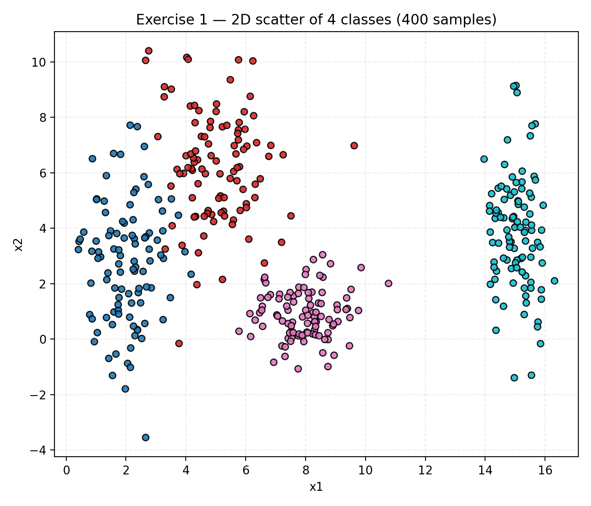

Exercise 1 — Exploring Class Separability in 2D¶
1. Dataset Generation¶
A synthetic dataset was created with a total of 400 samples, equally divided among 4 classes (100 each).
Each class was drawn from a 2D Gaussian distribution with the following parameters:
| Class | Mean (μ) | Standard Deviation (σ) |
|---|---|---|
| 0 | [2, 3] | [0.8, 2.5] |
| 1 | [5, 6] | [1.2, 1.9] |
| 2 | [8, 1] | [0.9, 0.9] |
| 3 | [15, 4] | [0.5, 2.0] |
The resulting data points form four distinct clusters in the 2D plane.
2. Scatter Plot and Observations¶
Below is the scatter plot showing the 400 samples colored by class:

Observations:
- Class 0 is centered around (2, 3) and vertically elongated because of the large σ_y = 2.5.
- Class 1 (mean ≈ (5, 6)) forms a more compact cluster slightly above Class 0.
- Class 2 (mean ≈ (8, 1)) lies in the lower-right area and is fairly circular.
- Class 3 (mean ≈ (15, 4)) is far to the right, clearly separated from the others.
There is little overlap between most classes — only minor intersections between Classes 0 and 1 due to their proximity.
3. Linear vs Non-linear Decision Boundaries¶
Two models were trained to visualize the decision regions:
- Logistic Regression (linear classifier)
- MLP with tanh activation (non-linear classifier)
Linear Model (Logistic Regression)¶
The linear model creates straight decision boundaries, effectively separating most clusters.
Its test accuracy reached 0.98, showing that the dataset is almost linearly separable.
Non-linear Model (MLP with tanh)¶
The MLP achieved perfect accuracy (1.00) and learned slightly curved boundaries, allowing a smoother fit between classes with small overlap.
4. Manual Boundary Sketch¶
Below is a scatter plot with manually drawn illustrative linear boundaries that could roughly separate the four classes:

The dashed lines represent possible linear decision boundaries that a simple classifier could learn.
A neural network could create smoother, curved separations in the overlapping regions.
5. Analysis¶
-
Distribution and overlap:
Each class forms a distinct Gaussian cluster. The spread differs per class, producing varying degrees of overlap. The largest overlap occurs between Classes 0 and 1 because they are spatially closer and both elongated along the y-axis. -
Can a linear boundary separate all classes?
Almost. The data is mostly linearly separable — a combination of a few straight lines can correctly classify most points. However, perfect separation may require non-linear adjustment near overlapping regions. -
Expected neural network boundaries:
A neural network with non-linear activation (like tanh) would learn slightly curved or piecewise-linear boundaries. These adapt to subtle overlaps, refining the classification margins beyond what purely linear models can achieve.
6. Conclusion¶
This exercise demonstrates that even when data is mostly separable with straight lines, neural networks with non-linear activation can learn smoother and more flexible decision surfaces, improving performance where overlap or curvature exists.